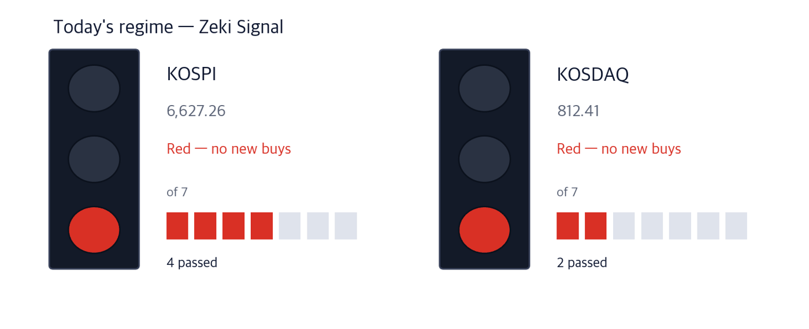
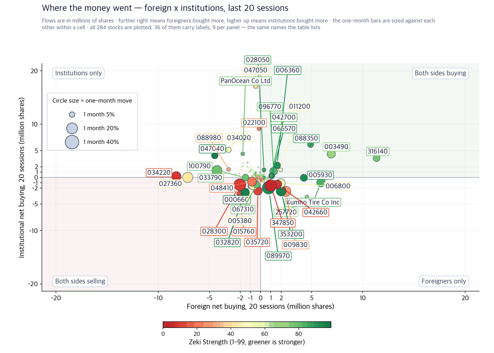
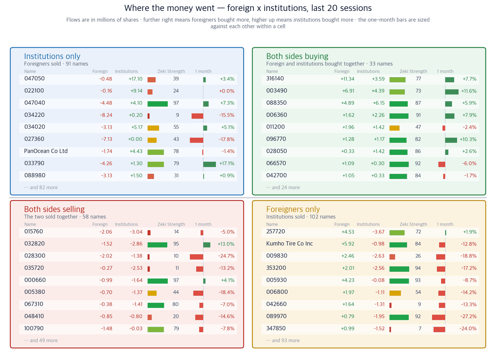

KOSPI 6,627.26 (-0.85%) | KOSDAQ 812.41 (+0.70%) | Zeki Signal Red | Nasdaq 25,981.57 (-0.78%) | USD/KRW 1,360.8 |

| Lit lamp | Today's regime. Green means buyers have the edge, yellow means wait, red means no new buys. |
| Filled squares | How many of the 7 conditions passed. More filled means firmer market structure. |
| All filled but not green | Something else pulled the grade down one step. The reason is printed under the lamp. |
The Zeki Signal is our own reading of the market against seven tests, shown as one light. Green is a buyable regime by our standard, amber says wait, red says hold off on new buying. On 15 September the KOSPI passed four of the seven and the KOSDAQ passed two. Both are red.
The won has gained about 200 won against the dollar in two months. It was in the 1,430s early last month and reached the 1,340s this month. Over the same stretch the KOSPI went nowhere. The sector table, however, was rewritten.
Through 14 September, the Korea Exchange bank index is up 5.0% this month while the KOSPI is down 1.99%. Transport, which contains the airlines, is up 2.35%. On the other side autos are down 6.79% and consumer staples, which contains the food makers, are down 9.47%. (Korea Economic Daily)
Overnight, that currency move went the other way. Crude rose 4.37% to $105.82 a barrel, the US 10-year Treasury yield closed at 5.00%, and the won weakened to 1,360.8 per dollar by the New York close. All of it happened before Seoul opens.
New York fell as well. The Nasdaq closed 0.78% lower at 25,981.57, and the S&P 500 closed 0.45% lower at 7,585.73. Seoul opens after New York shuts, so that is where this morning's pressure on the semiconductor names comes from.
So there is one question today. If the currency move reverses, does the sector reshuffle reverse with it? Our numbers split the answer three ways: names that gain from both the currency and the rate, names that lean on the currency alone, and names that never depended on the currency because they are paid in dollars.
1. Banks keep a second reason even if the won gives back its gain. A falling dollar rate lifts foreign-currency translation gains and the capital ratio. Rising government bond yields widen the deposit-to-loan spread. If the currency reverses the first reason goes and the second stays. Our bank sector rank, the average strength of the nine names we follow, moved from 8th to 6th.
2. Airlines lean on the currency alone, and crude just moved against them. Jet fuel and aircraft leases are paid in dollars, so a stronger won cuts the bill directly. But crude closed at $105.82 overnight. Fuel cost is price times exchange rate, and the price side is now undoing what the currency gave. Our airline sector rank slipped from 8th to 9th.
3. Power equipment loses from a stronger won, yet the share prices moved on their own. US artificial-intelligence data centres are buying transformers and cable, and they pay in dollars, so a stronger won shrinks the revenue once converted. Within that group the price moves diverged sharply. The numbers are below.
The largest event of the week is the US rate decision. Figures below are as of 15 September.
| Date | What to watch | What it changes |
|---|---|---|
| 16-17 September (US time) | US Federal Open Market Committee rate decision | Maeil Business Newspaper put the probability of a hike at 92%. A hike settles the 10-year yield above 5% and widens bank interest margins |
| Early 17 September (Seoul time) | The decision is published | It lands before Seoul opens, so it goes straight into the 17 September open |
| 15 September (close) | US 10-year Treasury yield 5.00% | The highest since July 2007. If it stays here, growth shares carry a heavier discount rate and the sectors that earn from interest do the opposite |
| What to watch | Level now | What it changes |
|---|---|---|
| USD/KRW | 1,360.8 | Above 1,380 the case for banks and airlines weakens, and autos and food makers gain instead |
| West Texas Intermediate crude | $105.82 | Above $110 the airline fuel bill erases what the currency handed back |
| KOSPI advancers | 312 of 631 | Yesterday 312 names rose and 306 fell. Below half, the index can rise while the market narrows |
None of the six below is a holding of ours. For each we give the figures we measured, then what would confirm the story and what would break it.
Banks have two supports in this reshuffle. A falling dollar rate raises translation gains and improves the capital ratio; rising yields widen the spread between deposits and loans. Choi Jung-wook of Hana Securities named banks as the beneficiary of the falling dollar rate and added that their defensive appeal grew while yields were rising.
Inside the group, though, foreign investors bought some names and sold others. Woori Financial Group was the largest 20-day foreign net buy among all the names we follow, while at Shinhan foreigners sold and domestic institutions took the other side.
Close KRW 36,300 | Day -1.36% | 1 month +7.7% | 3 months +9.8% | Zeki Strength 77 | Off high -11.0% |
| Who | Woori Financial Group, one of Korea's four large banking groups. |
| What | It closed at KRW 36,300, -1.36% on 15 September, and is +7.7% over the month. |
| When | The currency began moving quickly late last month; the bank index is up 5.0% so far this month. |
| Where | Within the Korea Exchange bank index it rose 9.02%, the second-largest gain in the group. (Korea Economic Daily) |
| Why | A falling dollar rate lifts translation gains and the common equity tier 1 ratio, and a rising bond yield widens the interest margin. Both pushed the same way. |
| How | Foreign investors bought +11.34m shares over 20 sessions, the largest among the names we follow, and institutions added +3.59m shares. Three of our four tests are met; Zeki Strength is 77, short of 90. |
Confirming signal — holding above the 15 September close of KRW 36,300 while both the foreign and institutional 20-day net buys stay positive. Those two are why the name is here.
What would invalidate it — a close below KRW 36,300, or USD/KRW moving above 1,380, which removes the currency leg.
Close KRW 111,900 | Day -2.70% | 1 month +4.2% | 3 months +4.9% | Zeki Strength 82 | Off high -2.7% |
| Who | Shinhan Financial Group, the strongest bank on our strength measure. |
| What | It closed at KRW 111,900, -2.70% on 15 September, -2.7% from its 52-week high. |
| When | It is up 5.23% this month through 14 September. |
| Where | One of six names in the Korea Exchange bank index that rose together. (Korea Economic Daily) |
| Why | The same path as Woori: a falling dollar rate and a rising bond yield. |
| How | The flows split, however. Foreigners sold -1.71m shares over 20 sessions while institutions bought +2.66m shares. Two of our four tests are met. |
Confirming signal — the foreign 20-day net turning from selling to buying. That is the test it currently fails.
What would invalidate it — a close below KRW 111,900 together with the institutional net buy fading, which leaves nothing behind.
Airlines pay for jet fuel and aircraft leases in dollars, so a stronger won cuts the bill at once. Lee Seo-yeon of Sangsangin Investment & Securities expects the won strength that began late last month, if it holds, to help airline earnings.
The other half of that same bill is the problem. Crude rose 4.37% overnight to $105.82. Fuel cost is crude times the exchange rate, so the oil price is undoing what the currency handed over. This theme rests on one support, and that support is now moving.
Close KRW 29,350 | Day -1.01% | 1 month +11.6% | 3 months +0.2% | Zeki Strength 73 | Off high -3.3% |
| Who | Korean Air, the country's largest carrier. |
| What | It closed at KRW 29,350, -1.01% on 15 September, and is +11.6% over the month, and it sits -3.3% from its 52-week high. |
| When | It is up 6.23% this month through 14 September. The plan letting Asiana mileage be used for ten years was cleared by the Fair Trade Commission on 15 September. |
| Where | It is the lead name in the Korea Exchange transport index. (Korea Economic Daily, Maeil Business Newspaper) |
| Why | Because the costs it pays in dollars fall — fuel and lease payments. |
| How | Foreigners bought +6.91m shares over 20 sessions, the second largest among the names we follow, and institutions added +4.39m shares. Three of our four tests are met; Zeki Strength is 73. |
Confirming signal — crude easing back below $105.82 while the shares hold above the 15 September close of KRW 29,350. A one-support theme needs the oil price to cooperate.
What would invalidate it — crude above $110 a barrel. Then the fuel bill takes back what the currency gave and the reason for the name is gone. At that point we drop the theme.
This theme runs the other way. US artificial-intelligence data centres buy transformers and cable and pay in dollars, so a stronger won shrinks the converted revenue. Orders are nonetheless growing quickly.
Hyosung Heavy Industries said on 15 September that it had signed two contracts to supply extra-high-voltage transformers to two US technology companies: KRW 220bn for 765kV units and KRW 166.5bn for 345kV units, KRW 386.5bn in total. Its new orders through August reached KRW 9.3 trillion, past the whole of last year, and the annual target was raised from KRW 8.4 trillion to KRW 12 trillion. (Korea Economic Daily)
There is a domestic version of the same push. The government's grid acceptance plan cuts the number of new transmission towers by 40% and puts lines underground where people live densely. Burying a line uses cable instead of towers. (Maeil Business Newspaper)
The share prices diverged sharply. The company announcing the largest order is down over the month, while a cable maker named in no article is up 47.2% over the same month. We show that gap rather than smooth it.
Close KRW 246,000 | Day +4.24% | 1 month +47.2% | 3 months +68.6% | Zeki Strength 99 | Off high -21.5% |
| Who | Gaon Cable, a maker of power cable. |
| What | It closed at KRW 246,000, +4.24% on 15 September — up on a day the KOSPI fell — and is +68.6% over three months. |
| When | The underground-grid plan appeared in the 16 September edition. |
| Where | The Ministry of Trade, Industry and Energy proposed burying transmission lines in places such as Jangseong and Daejeon. (Maeil Business Newspaper) |
| Why | Cutting new towers by 40% and burying lines substitutes cable for towers, and burying uses more cable over the same distance. |
| How | It is the only name meeting all four of our tests: Zeki Strength 99, +47.2% over the month, foreigners +257k shares, institutions +364k shares. |
Confirming signal — holding above the 15 September close of KRW 246,000 with Zeki Strength above 90, the two conditions that made it a four-of-four.
What would invalidate it — a close below KRW 246,000 or strength falling under 90. After a run of that size in one month, a pullback would be correspondingly wide.
Close KRW 196,700 | Day -0.41% | 1 month -4.7% | 3 months -23.6% | Zeki Strength 93 | Off high -38.2% |
| Who | LS Electric, a maker of switchgear and power control equipment. |
| What | It closed at KRW 196,700, -0.41% on 15 September, and is -23.6% over three months. |
| When | US data-centre orders for power equipment have run all year. |
| Where | Our electrical-equipment sector rank fell from 5th to 7th, and the company is third on strength within that group. |
| Why | Demand comes from US data centres and is paid in dollars, so a stronger won cuts the converted revenue. |
| How | Zeki Strength is high at 93 but the month is -4.7%. Foreigners bought +629k shares and institutions sold -313k shares. Two of four. |
Confirming signal — the monthly return turning positive while the institutional 20-day net turns to buying: the two tests it fails.
What would invalidate it — Zeki Strength falling under 90, which is the only reason it is still on the list.
Close KRW 2,725,000 | Day -2.36% | 1 month -7.8% | 3 months -30.0% | Zeki Strength 76 | Off high -40.8% |
| Who | Hyosung Heavy Industries, a maker of extra-high-voltage transformers. |
| What | It closed at KRW 2,725,000, -2.36% on 15 September — the day it announced KRW 386.5bn of US orders. |
| When | Both contracts were signed this month and disclosed on 15 September. |
| Where | They were signed through HICO America Sales & Technology, and the units go to data centres in the southern and northern United States. (Korea Economic Daily) |
| Why | More data centres need high-voltage transformers first. The company bought a Memphis, Tennessee plant in 2020 and builds locally. |
| How | The price has not followed: -7.8% over the month, -30.0% over three months, -40.8% from the 52-week high, Zeki Strength 76. One of four. |
Confirming signal — the monthly return turning positive and strength moving above 80, which the next quarterly result is the place to look for.
What would invalidate it — a close below KRW 2,725,000 with strength falling further. A large order does not by itself make a name, and here the price has not followed.
The conclusion for each of the three themes, in one table.
| Theme | Name | Zeki Strength | Weight of evidence |
|---|---|---|---|
| Currency and rate · banks | Woori Financial Group (316140) | 77 | Grounded |
| Currency and rate · banks | Shinhan Financial Group (055550) | 82 | Needs checking |
| Currency only · airlines | Korean Air (003490) | 73 | Grounded |
| Dollar orders · grid and cable | Gaon Cable (000500) | 99 | Well grounded |
| Dollar orders · grid and cable | LS Electric (010120) | 93 | Needs checking |
| Dollar orders · grid and cable | Hyosung Heavy Industries (298040) | 76 | Needs checking |
For every name we count four things: whether it rose over the month, whether Zeki Strength is above 90, whether foreign investors were net buyers over 20 sessions, and whether institutions were. The label follows the count.
| Name | ①up over the month | ②Strength 90+ | ③foreign net buy | ④institutional net buy | Met | Weight of evidence |
|---|---|---|---|---|---|---|
| Woori Financial Group (316140) | O | X | O | O | 3/4 | Grounded |
| Shinhan Financial Group (055550) | O | X | X | O | 2/4 | Needs checking |
| Korean Air (003490) | O | X | O | O | 3/4 | Grounded |
| Gaon Cable (000500) | O | O | O | O | 4/4 | Well grounded |
| LS Electric (010120) | X | O | O | X | 2/4 | Needs checking |
| Hyosung Heavy Industries (298040) | X | X | O | X | 1/4 | Needs checking |
The flow figures are as of 9 September. The route that carries the Korea Exchange investor-type data has been closed since 10 September, so the four sessions after that are not in yet. Prices and returns are as of 15 September; only the flows stop on 9 September.
A Zeki Strength of 90 is a deliberately high bar. Only Gaon Cable meets all four today.
The two pictures below place the 284 names we follow with enough turnover on the foreign and institutional 20-session net buy. The figures are as of 9 September.

| One dot | One stock. Its position is simply its two values, and the horizontal and vertical rules through the middle are the centre line for each. The four corner labels say what each quadrant means. |
| Dot size | The last month's move, up or down. Bigger means it moved more. |
| Dot colour | Zeki Strength — greener is stronger. |
| Only 30 | Korean and ticker labels overlap beyond that. The names left out sit near the centre, where little moved. |

| Four panels | The two measures are each compared with a centre line. Top right cleared both, bottom left cleared neither, and the other two cleared one. Each panel's title is a plain sentence saying what that means. |
| The two middle columns | Where the two periods are compared. If they carry letters A-E, that is the standard scale this industry uses: A heavy buying, B buying, C an even split, D selling, E heavy selling (a rank of all names in fifths, so A is the top 20%). If they carry numbers, that is net buying over the period. |
| Nine per panel | The largest movers in that panel. The rest are counted at the foot of the panel. These same nine per panel are the names labelled on the scatter. |
| Month bar | Zero at the centre: right is up, left is down. Compare lengths within one panel only — each panel is scaled to itself. |
| Zeki Strength | A 1-99 rank. Longer and greener means the stock's price is stronger than the market. |
These pictures show where money went; they do not forecast. We tested this four times across two markets and twenty years of data and it failed to predict the following month every time. We use it only as a last check.
An article can be right and the price can rise while the money stays away. Below are only the six names above, all as 20-session net buys to 9 September.
| Name | Foreign, 20 sessions | Institutions, 20 sessions | Which side bought | As of |
|---|---|---|---|---|
| Woori Financial Group (316140) | +11.34m shares | +3.59m shares | Both net buyers | 2026-09-09 |
| Shinhan Financial Group (055550) | -1.71m shares | +2.66m shares | Institutions only | 2026-09-09 |
| Korean Air (003490) | +6.91m shares | +4.39m shares | Both net buyers | 2026-09-09 |
| Gaon Cable (000500) | +257k shares | +364k shares | Both net buyers | 2026-09-09 |
| LS Electric (010120) | +629k shares | -313k shares | Foreign only | 2026-09-09 |
| Hyosung Heavy Industries (298040) | +29k shares | -23k shares | Foreign only | 2026-09-09 |
| Weight of evidence | Names | Up | Down | Beat KOSPI | Avg excess |
|---|---|---|---|---|---|
| No name has 5 trading days behind it yet. The 28 names run are on record and will be counted here as the days fill. | |||||
We average the Zeki Strength of the members of each sector. These are the top nine as of 15 September; the arrow is the change from the previous run.
| Rank | Sector | Sector strength | Change |
|---|---|---|---|
| 1 | Oil & Gas | 91 | — |
| 2 | Life insurance | 86 | — |
| 3 | Semiconductors & equipment | 83 | +1 |
| 4 | Construction | 80 | -1 |
| 5 | Non-life insurance | 75 | +2 |
| 6 | Banks | 73 | +2 |
| 7 | Electrical equipment | 72 | -2 |
| 8 | Cosmetics | 71 | +4 |
| 9 | Airlines | 71 | -1 |
The other end matters too. Autos rank 45th and auto parts 42nd, both graded D, and auto parts fell eight places. The currency did not only lift things.
Three things to watch during the 16 September session.
| When | What | Why |
|---|---|---|
| First 30 minutes | Whether USD/KRW stays above 1,360.8 | A weaker won erodes the case for banks and airlines and helps autos and food makers instead |
| Through the day | Whether banks and airlines move together | If they separate, the reshuffle is not explained by the currency alone |
| Last 30 minutes | Whether advancers beat 312 | This number shows the breadth of the market better than the index |
The US rate decision early on 17 September is the whole of this week. It arrives before Seoul opens, so it goes straight into that morning's open. A hike helps banks and insurers and burdens growth shares. A hold pulls bond yields down and takes half the support out of the reshuffle above.
| Term | Meaning |
|---|---|
| Zeki Strength | Where a name's price ranks among all the names we follow, on a 1 to 99 scale. Closer to 99 is stronger |
| Zeki Signal | The market regime measured against seven tests and shown as one light: green, amber or red |
| Weight of evidence | How many of four tests a name meets. Four is well grounded, three is grounded, two or fewer needs checking |
| 20-session net buy | The share count foreign investors or institutions bought less what they sold over the last 20 sessions, as published by the Korea Exchange |